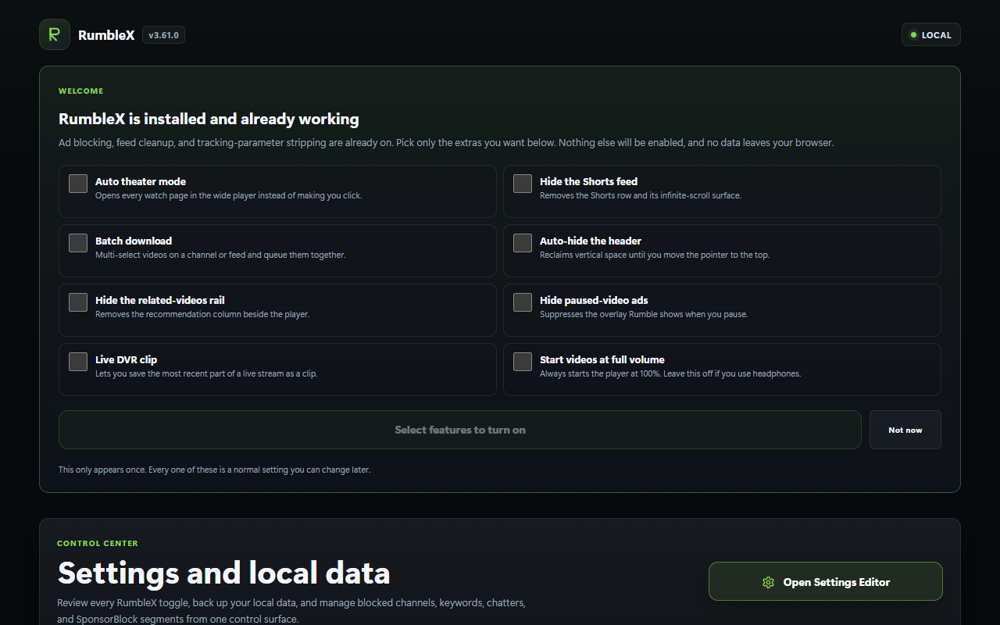
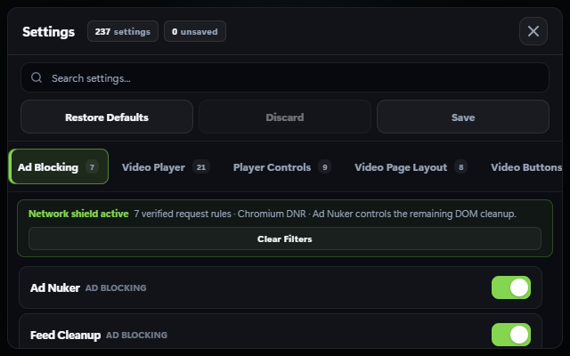
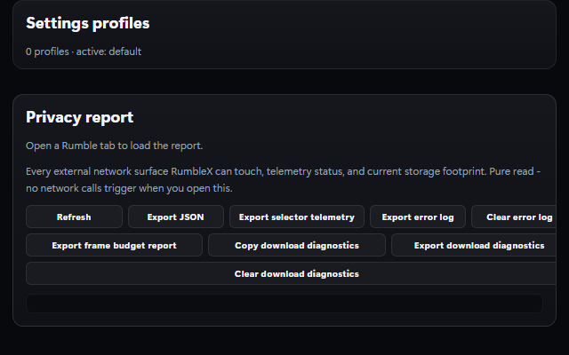
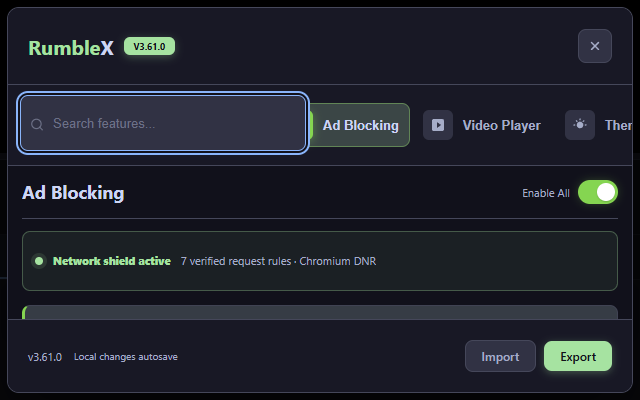
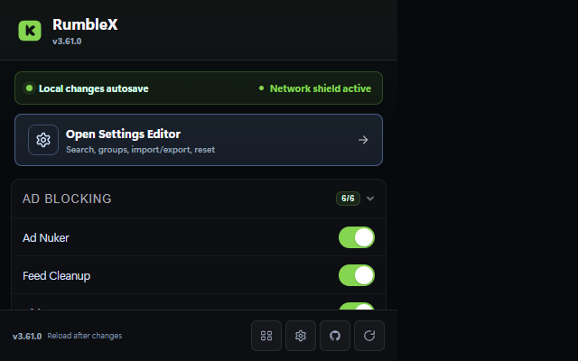

Clean the page before it distracts you
Scoped request blocking handles known ad hosts. Page cleanup removes overlays, premium prompts, Shorts, sponsored cards, and the empty space they leave behind.
Block ads, reshape the player, download what you chose to watch, and tune the whole site to fit you. RumbleX brings 141 focused modules together without telemetry or an account.

Start with a cleaner Rumble. Add only the tools that earn a place in your browser.
Scoped request blocking handles known ad hosts. Page cleanup removes overlays, premium prompts, Shorts, sponsored cards, and the empty space they leave behind.
Theater Split puts video beside live chat, comments, or downloads. Add per-channel playback memory, chapters, transcripts, SponsorBlock, and a mini player when you want them.
Download direct MP4, convert HLS, export a clip, batch a feed, or queue a channel. Failure messages identify the stage that broke and point to the next practical option.
Settings, watch activity, bookmarks, diagnostics, and undo snapshots stay local. The built-in Privacy Report shows every permission and network destination in plain language.
The same dark visual system covers setup, deep settings, privacy, and controls on Rumble itself.




Pick your browser. Every download comes from this project's Releases page.
Chromium 111 and newer. RumbleX uses color-mix() for themed translucent controls and the modern abort timeout API for bounded network work.
RumbleX-chrome.zip from the latest release and extract it.chrome://extensions and turn on Developer mode.Chrome shows a reminder about developer-mode extensions, and it won't update this install for you. Check back here or watch the repository for new releases. A signed RumbleX-chrome.crx is included for managed or policy-enabled browsers, but standard Chromium installs can reject direct CRX installation. The ZIP is the dependable route.
Firefox 121 and newer. That release supports the :has() selectors and color-mix() styles RumbleX uses across its cleanup rules and themes. The current release provides an unsigned AMO submission for temporary testing. It is not a permanently installable add-on.
RumbleX-firefox-amo-unsigned.zip from the latest release and extract it.about:debugging#/runtime/this-firefox and click Load Temporary Add-on.manifest.json. Firefox removes the temporary add-on when it restarts.A permanent RumbleX-firefox.xpi will appear only after Mozilla signs the submission. This page does not offer an unsigned ZIP as an installable XPI.
For Tampermonkey, Violentmonkey, or ScriptCat. Two builds:
Userscripts get most of the suite. The pieces that need a privileged background process stay out: the channel archive queue, alarms, native notifications, context menus, and the side panel.
A correctly installed userscript can sit there doing nothing until you give the manager permission to run user scripts. Nothing warns you on the page, so it looks exactly like RumbleX being broken.
chrome://extensions/?id=<your manager's ID>, or right-click the Tampermonkey icon and pick Manage extension, then turn on Allow User Scripts. It is per-extension and off by default on a new install. Chrome 137 and older use the global Developer mode switch at the top of chrome://extensions.edge://extensions.Reload the Rumble tab afterwards. If the RumbleX button still isn't there, a gated manager and a broken install look identical from the page. Open DevTools on any rumble.com page and run Object.keys(localStorage).filter(k => k.startsWith('rx_')). If it returns anything, RumbleX has run here before, so the match rules are fine and the problem is the toggle or a disabled script. An empty array proves nothing by itself, so check the manager's dashboard to see whether RumbleX is listed at all.
None of this applies to the extension builds. They have no userscript manager in the path.
Every release ships SHA256SUMS.txt for the Chrome ZIP and CRX3, Firefox submission, source archive, and userscripts. This confirms the file arrived in one piece.
sha256sum -c SHA256SUMS.txt --ignore-missingThat proves the download wasn't corrupted or swapped in transit. It doesn't prove who built it, which is the part that matters if someone puts up a copy of this project somewhere else. When a release also carries SHA256SUMS.txt.sig, you can check the origin:
ssh-keygen -Y verify -f allowed_signers -I release@rumblex -n file \
-s SHA256SUMS.txt.sig < SHA256SUMS.txtGood "file" signature means the checksums came from the key published in the repository. If either check fails, don't install the files.
RumbleX only reaches the network for things you trigger: fetching a video you chose to download, checking GitHub for a newer release, and, if you switch it on yourself, syncing settings to a private Gist you own or posting to a Discord webhook you configured. The built-in Privacy Report lists every one of these, generated from the actual manifest rather than written by hand.
Permissions stay narrow on purpose. RumbleX asks for Rumble's domains, the ad hosts it blocks, and optional GitHub access for update checks or encrypted Gist sync.
The request-level shield works differently on each runtime, so here's what actually happens:
| Runtime | Early request blocking | What we claim |
|---|---|---|
| Chrome, Edge, Brave | Scoped Declarative Net Request rules | Enforced by the browser |
| Firefox | Scoped blocking webRequest | Enforced by the browser |
| Userscript managers | Only where the manager still offers the request hook | Depends on your manager, so we don't claim it |
Current Chromium versions of Tampermonkey and Violentmonkey dropped that hook when they moved to Manifest V3. On those, the page cleanup still runs and still removes ads from the layout. It just can't cancel the request before it happens, and RumbleX says so in its own interface rather than pretending otherwise.